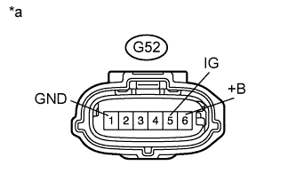

DTC B2768 Неисправность внутренней цепи датчика наклона |
| Код DTC | Условие обнаружения DTC | Неисправный участок |
| B2768 | Выполняется одно из следующих условий:
|
|
| 1.ПРОВЕРЬТЕ ЖГУТ ПРОВОДОВ И РАЗЪЕМ (ДАТЧИК РЫСКАНЬЯ – АККУМУЛЯТОРНАЯ БАТАРЕЯ И МАССА) |
|  |
Отсоедините разъем G52 датчика.
Измерьте сопротивление в соответствии со значениями, приведенными в таблице ниже.
| Контакты для подключения диагностического прибора | Условие | Заданные условия |
| G52-1 (GND) - масса | Всегда | Менее 1 Ом |
Измерьте напряжение в соответствии со значениями, приведенными в таблице.
| Контакты для подключения диагностического прибора | Положение переключателя | Заданные условия |
| G52-6 (+B) - масса | Всегда | 11-14 В |
| G52-4 (IG) - масса | Замок зажигания в положении ON (ВКЛ) | 11-14 В |
| *a | Вид спереди разъема со стороны жгута проводов: (к датчику рысканья в сборе) |
|
| ||||
| OK | |
| 2.ПРОВЕРЬТЕ DTC |
Сбросьте коды DTC (Нажмите здесь).
Включите, а затем выключите зажигание.
Установите противоугонную систему в состояние готовности (Нажмите здесь).
Убедитесь, что контрольная лампа безопасности перестает гореть постоянно и начинает мигать.
Установите противоугонную систему в состояние неготовности (Нажмите здесь).
Проверьте коды DTC (Нажмите здесь).
|
| ||||
| OK | ||
| ||
| 3.ЗАМЕНИТЕ ДАТЧИК РЫСКАНЬЯ В СБОРЕ |
Временно замените датчик рысканья в сборе новым или заведомо исправным (Нажмите здесь).
| ДАЛЕЕ | |
| 4.ПРОВЕРЬТЕ DTC |
Сбросьте коды DTC (Нажмите здесь).
Включите, а затем выключите зажигание.
Установите противоугонную систему в состояние готовности (Нажмите здесь).
Убедитесь, что контрольная лампа безопасности перестает гореть постоянно и начинает мигать.
Установите противоугонную систему в состояние неготовности (Нажмите здесь).
Проверьте коды DTC (Нажмите здесь).
|
| ||||
| OK | ||
| ||